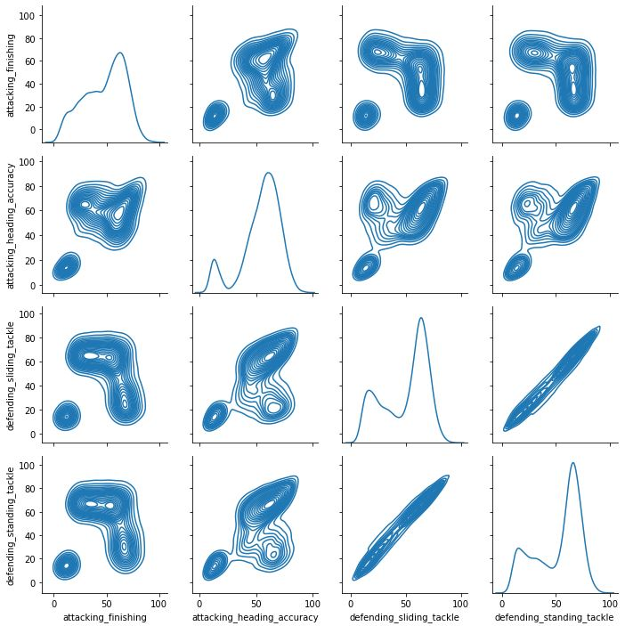
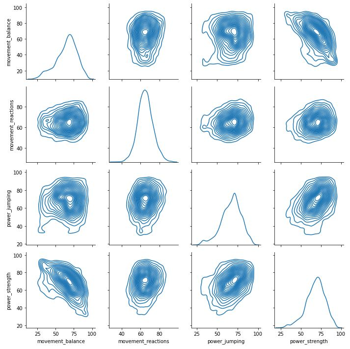
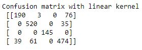
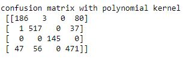
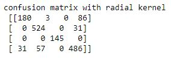

Support Vector Machine
Analyses: SVM
Data preprocessing:

We have used the cleaned EA FIFA data that we obtained from the decision trees section. We will use this to see how support vector machine performs.
Coding:
Results:
The matrix shows three key clusters most likey they are attackers, goalkeepers and defenders. So key skills can be usefull because they show clusters and can help the model to classify. But again we can see that midfielders stats vary so much that there is no clear cluter for them.
Looking at the matrix using physical attributes that are common for most athletes, we can see the lack of cluster division.
These are the confusion matrix we obtained from using different kernels
Model accuracy : 0.861
Model accuracy : 0.854
Model accuracy : 0.865
Conclusion:
Using the same clean FIFA data that we used on other supervised classifiers, we can observe that support vector classifiers performed the best. From the visualizations we can again confirm our hypothesis that midfielders have a wide range of stats and it can be dificult to predict them. But SVM performed much better in predicting them and got a higher accuracy of 86% when compared to other classifiers.